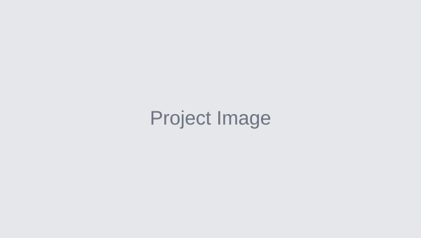

TermFS
A terminal-based file system simulator that recreates UNIX commands such as
mkdir, cd, ls, rm, tree and grep. Files and folders are stored in a tree, each
folder uses a hash table for fast lookups, and grep uses the KMP search algorithm.
Classroom Reservation System
A desktop app for booking KFUPM classrooms. Users can sign up, browse available
rooms and request a time slot, while admins add and edit rooms and approve or
reject reservation requests.
Digital Queue Management System
A ticket and queue system, like the ones used in banks and clinics, running on an
FPGA board. It issues tickets, calls the next customer, shows the queue on
7-segment displays and uses LEDs to signal when the queue is full.